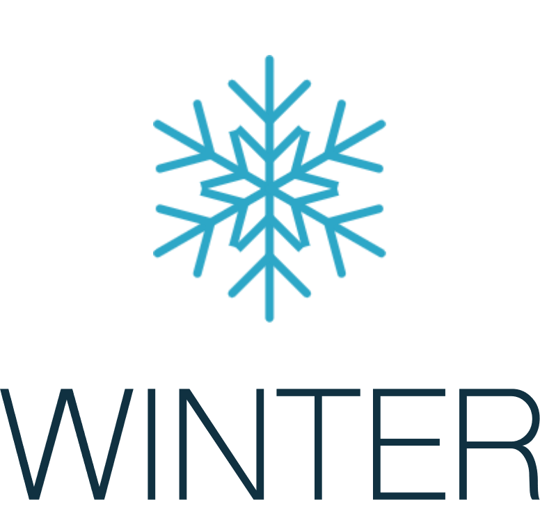
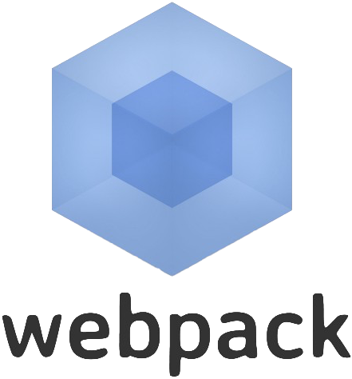
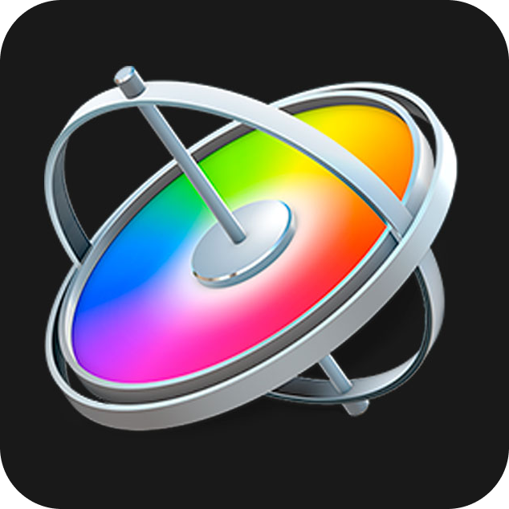

Веб-разработка
Процесс
Мы начнем работу с MVP (минимально- жизнеспособный продукт). Это пилотная версия с минимальным функционалом. Получив первую обратную связь, можно приступить к доработке и расширению. Это позволит снизить затраты и риски. И даже после создания дизайна, верски возможны корректировки цыета, типографики и наполнения.
- Согласование
Шаг 1
Фиксация мыслей и потребностей клиента, заполнение брифа
Шаг 2
Создание прототипа, погружение в нишу
- Дизайн, юзабилити
Минимально жизнеспособный продукт
Шаг 3
Дизайн - проект
Шаг 4
Разработка UI и UX решений, внедрение в проект
- Разработка
Шаг 5
Верстка и программирование, базовое наполнение
Шаг 6
Разработка более сложного функционала, движка
Шаг 7
Детальное наполнение, смысловая нагрузка
Шаг 8
Интеграция сторонних сервисов
Фоновые процессы, тексты, изображения, видео
Какие мы делаем сайты
и для чего они нужны
Лендинг
Визитка
Инфо-сайт
Имиджевый сайт
SPA
Лендинг -
это одностраничный сайт, посадочная страница. Такой сайт чаще всего завязан на визуализации товара, услуги и должен за несколько шагов вызвать у человека доверие к продукту. Лендинг - на одной странице концентрирует все самое важное. Максимально эффективная рекламная компания лендинга нацелена на продажу одной услуги или товара. И главное - побудить к действию. Конверсионный лендинг раскрывает ваше УТП, подчеркивая преимущество услуги или товара. Лендинг побуждает к покупке, потому на нём всегда есть призыв к действию. Звонок, запрос на звонок - самые очевидные способы призыва к действию. Но бывают и более сложные: пройти несложный тест или запросить бесплатный материал.
Визитка
в первую очередь создается с целью поддержания репутации и узнаваемости бренда и представляет собой веб-презентацию, которая на нескольких страницах деликатно рассказывает о вашей компании или продукте. Этот небольшой сайт обладает визуальными свойствами лендинга: продающим дизайном, красивым UI (пользовательским интерфейсом), но используется для более детального акцента на продукте или услуге. Также подходит для того, чтобы рассказать о личности, явлении, компании.
Инфо-сайт -
это ресурс, целью которого является донести информацию. Типичный пример инфо-сайта, сайт-блог. Это большие многослойные сайты с рубрикацией и сложной структурой, внутрипоисковой системой и средствами пользовательского взаимодействия. Такие сайты приспособлены к размещению и выдаче больших объемов информации, такой ,как , например, новостная лента.
В долгосрочной перспективе инфо-сайт зарабатывает на привлечении трафика, публикации рекламы или платных материалов. Их очень часто продвигают с помощью SEO оптимизации, ключевых запросов.
Имиджевый сайт
отличается выверенным стилем, "журнальным", "глянцевым" дизайном, лаконичной и рекламной подачей. Расчитан на небольшой объём текста обилие фото и видео-материалов.
Его можно отнести как к лендингу, так и к визитке при том, однако он не несёт тех функций, которые им присущи. Цель такого сайта не сколько продать, сколько впечатлить, покорить. Имиджевый сайт отличается концептуальностью, показывает статус. Благодаря сочетанию смысловых и визуальных идей позволяет создать представление о бренде или человеке.
Подходит для презентации продукции, персоны и служит укреплению имиджа.
Single Page Application -
одностраничное приложение. Оно работает без обновления страниц. Обычно на сайте вы после нажатия на ссылку экран становится черным и через несколько секунд перед вами появляется новая страница. Но вместо этого вся страница остаётся на месте, но вместо старой информации возникает новая. SPA сайты хорошо влияют на пользовательские показатели сайта. С них меньше уходят, а значит, вы экономите на рекламной кампании, и он выглядит привлекательнее для посетителя.
Существенный минус: не получится сделать SEO - продвижение. В SEO необходимо наличие страниц со статической информацией. Когда поисковые роботы обходят страницы сайта, они фиксируют метаданные: описание страницы, ключевые слова и смысловые блоки. Так, поисковые системы распознают уникальные страницы и ранжируют их в выдаче по целевым метрикам, таким как аудитория, цель, продукт, предложение. SPA сайт динамичен, информация на нём меняется постоянно и надеяться на то, что поиск распознает и интерпретирует содержание такого сайта - нельзя.
Чаще всего SPA -сайт выбирают для создания ресурсов с большим объёмом информации, например, маркетплейсы, агрегаторы товаров, новостей, интернет-магазины, сервисы и онлайн-инструменты.
Наши критерии
создания сайтов
#1
Концептуализм в подаче
Не используем готовые решения, а разрабатываем с нуля. Каждый пиксель оправдан
#2
Интенсивность
Short time-framed, соблюдаем сроки работы и стоимость реализации проектов
#3
Ведём непрерывный диалог
Деликатная коммуникация. Своевременная обратная связь
#4
Внедрение инноваций и современных тенденций
Используем самые популярные технологии на рынке. Внедряем самые удачные решения из мирового опыта веб-разработки.
#5
Высокая скорость загрузки
Соблюдаем стандарты поисковых систем и инженерных качеств веб-разработки
#6
Удобный интерфейс
Когнитивная легкость. Интуитивно понятное управление.
#7
Погружение в нишу
Исследуем рынок и обоснованно реагируем на изменения в нуждах потребителей
Технологии
Которые
мы используем








